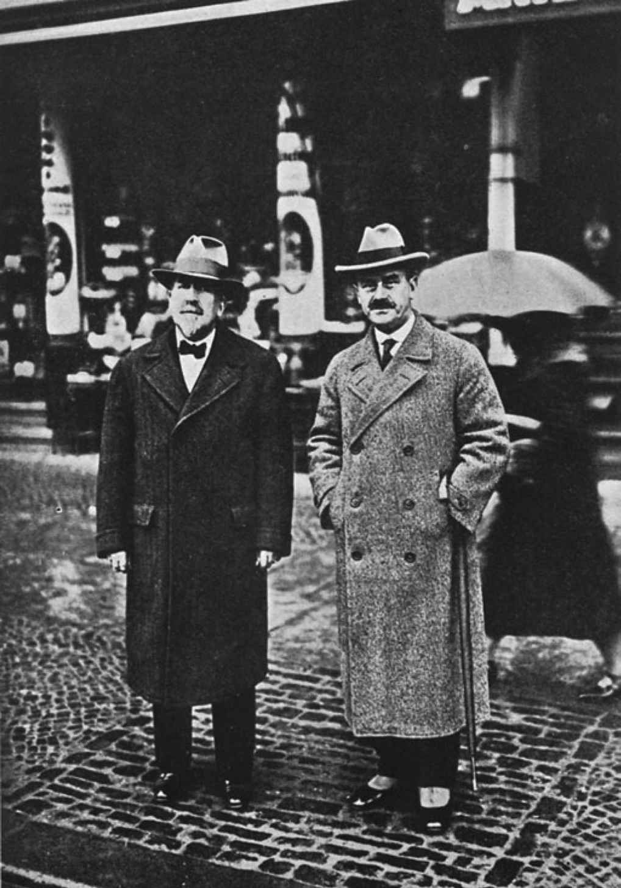
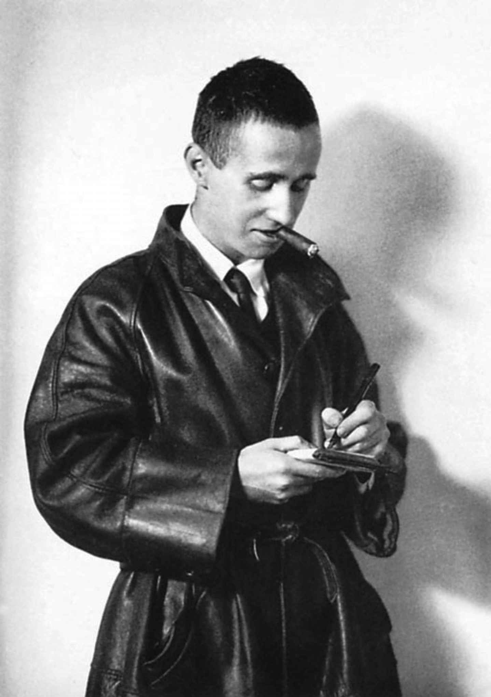
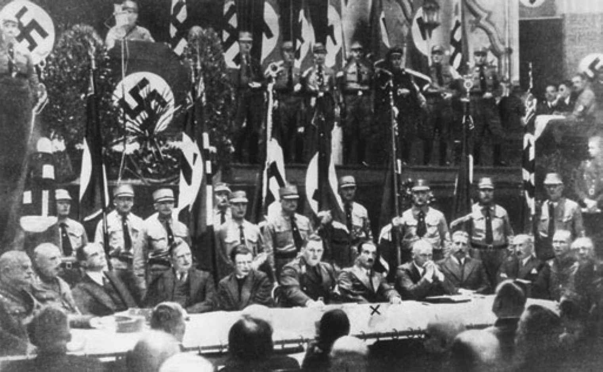

19世纪的人们试图把世界经济规划进各个独立的政治帝国，然而1914年爆发的战争引发了这类尝试的长久崩溃。大多数德国人欢迎这场战争，它是十多年来日益恶化的竞争压力的释放，也是对抗英、法、俄三个协约国围剿的战斗。对托马斯·曼来说，这是一场“文化”反抗“文明”的战斗，也是他反对自家兄弟的战斗。
他在战争时期写的两卷本的《一个不问政治者的观察》（1918）中说，正宗德国的一切是“文化、灵魂、艺术、自由，而不是文明、社会、投票权和文学”。“文明”是英国和法国的肤浅事物，是左翼知识分子（亨利希·曼尤为突出）普遍怀有的幻想，他们认为精神的生命等同于政治的动荡和把改变世界视为写作目的的新闻工作者的社会“参与”。相比之下，德国知道“艺术”比文学的闲话更深刻，真正的自由不是议会和出版自由的问题，而是关乎个人、道德和责任。西方列强虽然声称它们是为了争取自己的“自由”而反抗德国的“军国主义”，但是从这个角度看，它们正在联合起来把自己的商业大众社会强加给致力于个人自我修养的德国人。因此，托马斯·曼正确地认识到了“艺术”、“精神”、“教养”、康德的内心“自由”等概念与作为专制国家仆人的德国官僚阶级对诸如议会制、自由企业、商业化大众媒体等实施资产阶级自我主张的手段的敌意之间的联系。1918年11月，皇帝及其将军们不再有能力保护，甚至喂饱德国人民，只好把他们的责任移交给社会党多数派，官僚们留在政府部门，把坚持专制的态度维持到议会制政府的新时代。1919年在共和国内最大的普鲁士邦，一个社会民主政府在魏玛通过宪法无缝接入旧的结构。奥斯瓦尔德·斯宾格勒（1880—1936）在《普鲁士主义和社会主义》（1920）中为两种体系各自的特征辩护，因为二者都旨在将全体工人转变成国家官员，从而回答“不仅针对德国，而且针对世界的决定性问题［……］：未来是商业掌控国家还是国家掌控商业？”。接受无声无息地结束了德国君主制的政治革命，并不意味着放弃与“文明”的抗争。事实上，斯宾格勒认为他为世界历史所作的大型“形态学”调查《西方的没落》（1918，1922）证明了德国精神的惨胜，让人们通过作者就能够了解到技术和数理组织即将取代传统的欧洲文化。

图15 1927年的海因里希（左）和托马斯·曼
对德国来说，战争并没有在1918年结束。饥饿、流感、内战、法国为了确保赔偿对领土的重新占领、在1923年的通货膨胀中达到顶峰的由人口和资源流失造成的经济崩溃，使战时紧急状态延续了五年。在危机结束时，魏玛共和国由财产权益在通货膨胀中幸免于难的几位巨头、直接面对世界经济波动的劳动人口以及一个比1914年膨胀了13倍的福利国家管理者和受益者组成。搅乱了战前世界的资产阶级即将面临瓦解的征兆首先出现在德国。这段革命转型时期的文学反映了制度的不稳定和个人的孤立。现在不是现实主义的时代了，而是绝望、抽象的反抗和乌托邦希望迎来新的开始的时候。相应地，“表现主义”运动在诗歌和戏剧这类预言性和情感丰富的形式中最为活跃。1920年的诗选《人类的薄明》收录了23位诗人的诗歌，称颂模糊不明的道德热情：
表现主义戏剧的特点同样是借助拔高的激昂语言故意追求抽象性和普遍性，但是通过应用合唱和角色的风格化，它在表现大规模的工业和政治冲突方面比诗歌取得了更大的成功：赖因哈德·戈林（1887—1936）、格奥尔格·凯泽（1878—1945）和恩斯特·托勒尔（1893—1939）的作品如今不容忽视。
尽管社会革命是深刻的，但它仍然没有改变一切。1919年，阿尔伯特·爱因斯坦在评论柏林的氛围时把德国比作“一个倒了胃口，但尚未呕吐干净的人”。等到1924年美国道威斯计划和一笔巨额的相关贷款使德国经济稳定下来，表现主义的时代实际上已经结束了，一种“新的清醒”（新写实主义）统治了文学界，旧的连续性可以重新建立起来。魏玛似乎是新共和国制宪会议开展工作的合适场所，这至少部分是因为19世纪后期的一个神话：在歌德的魏玛诞生了一个文化国家，它是政治国家的先兆。这个神话般的魏玛现在可以被视为真正的、经久不变的德国。连续性也不仅仅是意识形态方面的。德国的众多剧院经历了宫廷赞助人的罢黜仍幸存下来，现在接受了政府补贴，并摆脱了审查制度，继续为被视为“艺术”而非仅供娱乐的戏剧提供平台。新教神职人员和大学把官僚知识分子在君主制下的任职带进了一个君主空缺的迷乱时代，大学几乎立刻开始了对新共和国的智力攻击。马丁·海德格尔（1889—1976）在天主教徒被归为二流德国人的时代出生在天主教家庭，1919年改宗路德宗，从而进入更广阔且资源更佳的新教的大学世界。在《存在与时间—第一部》（1927，第二部从未动笔）中，海德格尔用罕见的方式把哲学中某些最基本问题的极端非个性化的重读与路德教对个人道德救赎的解释结合起来。因此，他的“存在主义”为拒绝“不真实的”当代社会提供了概念手段。他认为每个人选择了自己的历史，因此他的“存在主义”也为罔顾理性的政治激进主义提供了借口。海德格尔迅速成为右翼知识分子的图腾，但是当前占据教席的斯特凡·格奥尔格的门徒们也对人文科学的学术话语具有深远影响，他们把学术话语从社会和经济的考虑范围转移到后来被称为“思想史”的领域，详细阐述了他们的老师对孤独的、改变世界的历史人物的膜拜。1916年，海德堡的弗里德里希·贡多尔夫（1880—1931）出版了划时代的歌德研究报告；1918年，波恩教授恩斯特·贝尔特拉姆（1884—1957）发表了相似的尼采研究报告，并在标题页印上了格奥尔格的万字符标志。1928年的重要出版物不仅有法兰克福和马尔堡的教授马克斯·科默雷尔（1902—1944）的文学批评代表作《诗人--德国古典主义领导者》（它已将威廉皇帝对德国的愿景与君主国的民族社会主义版本结合起来），还有斯特凡·格奥尔格本人最新也是最后的诗集《新帝国》。尊严让格奥尔格不屑于表达某种政治观点，但是从一首被冠以预言性标题的诗作《致第一次世界大战中的年轻领导人》荷尔德林式的措辞和军事化的韵律中可以清楚看到，他认为德国在最近的冲突中的屈辱只是一个更伟大的未来的前奏：
在全体国家雇员中，武装部队的成员最不可能对签署了投降文件和《凡尔赛条约》的新政府抱有尽忠之心。恩斯特·云格尔（1895—1998）在整个第一次世界大战期间战功卓越，四年前线生涯的回忆录《在枪林弹雨中》（1920）证明了为求生必须冷酷无情。“要活着就要杀人，”他后来写道。尽管《在枪林弹雨中》的巨大成功已确保他成为一名职业作家，他仍在继续谈论他那一代人机械化大规模战争的经历。在《工人》（1931）中，他将现代化经济生活阐释为战时总动员的延伸：他正确地看到，资产阶级的消亡和中间阶层的无产阶级化在德国已经进展迅速，注定要普遍化，但是他错误地认为只有官僚加军事的指挥结构才能组织由此产生的工业社会。海德格尔对云格尔针对现代世界的分析印象深刻，但他的反应是转而把荷尔德林和尼采奉为德国未来的指南。戈特弗里德·本恩曾作为军医参加战争（并以此身份出席了对艾迪丝·卡维尔 [19] 的行刑），却更加激进地拒绝平民世界，而他正是依赖平民世界的堕落维生的（他还是性病专家）。受斯宾格勒和毒品实验的影响，他在20世纪20年代开始蔑视现代文明在人类经验的远古和神话层面之上建构的肤浅秩序：在他看来唯一真正的秩序是他（有时借用过于明显的强力）强加给自己的诗的秩序。他公然拒绝诗人的社会角色，蓄意挑衅在《人类的薄明》中与他并肩作战的社会主义者和共产主义者。不过，与海德格尔和云格尔一样，他也乐意借助受共和国的右翼反对派青睐的军事领导层的傲慢辞令来赢得知识分子的体面表象。
左翼面对的情形也好不到哪儿去。德国共产党人坚持自己的革命，在莫斯科的指示下，他们的第一个目标必须是摧毁执政的社会民主党。他们和右翼一样喜欢使用反资产阶级的言辞，这种言辞在通货膨胀之后没有了真正的敌人，而是协助动摇了脆弱的政治共识。格奥尔格·格罗兹（1893—1959）的邪恶漫画把魏玛德国塑造成一个肆意抢掠资本的野蛮之地。然而当格罗兹搬到20世纪30年代的美国时，他看到了更多的自由企业和更少的社会福利，并且缺少了德国背景所能提供的政治推动力，他的灵感枯竭了。不仅政治关系重大，而且政治机构同样重要的感受在诗人兼剧作家贝托尔特·布莱希特（1898—1956）的作品中也难觅踪迹，而他的作品一向被认为丰富多样且往往富有人道主义。
布莱希特出身于奥格斯堡的造纸商家庭，他的家庭属于正在消失的资产阶级，但在他于1924年为了成为专业的作家兼导演迁居柏林之后，对马克思主义的研究让他靠近了那些看到了未来完全被国家掌控的人，不过他从未成为共产党的一员。相反，和格罗兹一样，他描绘出讽刺的、喜剧的、有时甚至是悲剧的怪诞画面，特别是虚构的盎格鲁—撒克逊世界（无论是18世纪的英国、19世纪的美国还是吉卜林 [20] 的殖民帝国），这个世界在战争及紧随其后的繁荣年月，似乎成为现代性的权威体现，再次把自己强加于德国。布莱希特20世纪20年代作品中欢快的不和谐，尤其是同库尔特·魏尔合作的《三毛钱歌剧》（1928）和《马哈哥尼城的兴衰》（1928—1929），源于对“资本主义”生活的想象或称幻觉的矛盾感受。一方面，它提供了消费和不受限制的享受的机会，引发了人们任性而不道德的贪欲—这是从布莱希特的第一部剧作《巴尔》（1918，描述一个肆无忌惮地放纵自我、绝无半分自怜自哀的诗人）开始的常驻主题。另一方面，官僚德国的道德观念仍然存在，其悠久的传统被不负责任的消费主义侵犯，在布莱希特的作品中借助苦涩的讽刺得以表达。然而，这种经济批判背后的道德推动力量并非对国家完整性的政治关注，而可以说是对享乐主义正当性的要求，要求平等地分配快乐，团结那些拒绝享乐或把享乐视为痛苦的人。从主旨到形式，布莱希特都与毕希纳有着某种联系。布莱希特的首部诗集《家庭祈祷书》（1927）中最重要的叙事歌谣之一借用了“狂飙突进”的主题—杀婴的母亲；《三毛钱歌剧》里的歌曲《海盗詹妮》向我们塑造了一个洗碗工，她梦见海盗船上的8艘帆船和50门大炮，将为了向她致敬而悬挂旗帜，然后轰炸让她受苦受难的城市。但是布莱希特与社会的接触并没有超出轰炸它的欲望。尽管他一再声称，使他的作品既可耻又成功的艺术技巧是为了让观众思考剧中提出的政治问题，但是这些戏剧真正涉及的魏玛共和国的机构，就只有剧院。从索具板降下的海报、对观众的直接宣讲、对大歌剧的仿拟、套用魏德金德的风格将角色缩减为提线木偶的做法，一切都在鼓励人们思考，不是思考公共事务，而是思考表演的戏剧性。这是对德国本土戏剧“剧即书”传统完全且成功的突破，但也是一种颠倒的唯美主义，把对艺术的批评转变为艺术。

图16 1927年的贝托尔特·布莱希特，在《三毛钱歌剧》大获成功之前
在布莱希特的柏林朋友瓦尔特·本雅明（1892—1940）的作品（大多于其死后出版）中也可以发现相似的倾向：在批评新世界的表象下固化旧的观念。本雅明试图成为德国文学教授，但失败了。他起初致力于相对非政治性的“思想史”，后来接近马克思主义，寻求一种能阐释艺术和社会之间关系的更唯物主义的理论，最后在文论《机械复制时代的艺术作品》（1936）中程序化地表达出来。他在文中论证了与布莱希特极为相似的观点：在大众传媒的时代，艺术不再能创造个性化的美丽物品，不得不变成政治。他忽视了“艺术”概念特殊的德国渊源：从范围上说，艺术是官僚专制主义意识形态的一部分；从后果上看，以艺术的名义批判社会是在维护压迫时代的价值观。本雅明曾与法兰克福的社会研究所合作过一段时间，该研究所由一位百万身家的谷物商人的儿子于1923年创立，任务是调研工人阶级的状况，后被并入当地的新大学 [21] （1914年建立）。1931年马克斯·霍克海默（1895—1973）担任研究所所长，研究所的任务转向了一个新的方向：发展一套普遍性的社会批判理论。在被霍克海默暂时集中于法兰克福的杰出人才中，有信仰黑格尔和马克思主义的哲学家赫伯特·马尔库塞（1898—1979）、心理学家埃里希·弗洛姆（1900—1980），以及阿尔班·贝尔格的学生、年轻的作曲家兼音乐理论家特奥多尔·维森格伦德·阿多诺（1903—1969）。阿多诺致力于德国的音乐传统，并为本雅明对现代社会中艺术角色的捍卫所感动，因此在1934年纳粹禁止播放被称为爵士乐的堕落的美国音乐时，他对此禁令表示欢迎。
魏玛共和国的知识分子朋友寥寥无几，但是最杰出且最笔耕不辍的终究是托马斯·曼。在漫长的德国战争的尾声，他勉强承认其兄长的政治思想比自己的更加现实，然而在1922年，右翼极端分子谋杀了犹太籍的德国外交部长—受人敬仰且成果斐然的瓦尔特·拉特瑙，他对此大为震惊，因而全心全意投身于共和国的事业。在接下来的十年里，特别是在1929年之后他凭着诺贝尔文学奖得主的权威，发表了众多备受瞩目的作品，以支持他目前认为能实现德国启蒙运动承诺的制度。当被解放的犹太人在一个社会民主的政府里脱颖而出，而对这个政府的敌意以反犹主义的形式日益明显之时，他开始创作一系列基于《圣经》的互相联系的故事《约瑟和他的兄弟们》（1933—1943），特意提请读者注意西方历史的犹太根源。1922年的危机也让曼找到了自1913年开始动笔的《魔山》的一个聚焦点，本书最终于1924年出版。达沃斯的疗养院为他的这部小说提供了一个关于战争爆发前夕高雅文化清高闭塞的氛围（骄纵、道德松懈、充满对即将到来的崩溃的预感）的隐喻。汉斯·卡斯托普是一个平凡的、“不问政治”的德国资产阶级年轻人，在这个时间似乎停滞的虚幻环境中屈服于一系列智力诱惑，从唯物主义科学到疑病症再到性暧昧，从精神分析到X射线再到唱片音乐。自由民主的资产阶级启蒙运动代表罗多维科·塞特姆布里尼和犹太籍耶稣会会士利奥·纳弗塔之间维持着一场关于政治和道德问题的、半漫画式的，但以自杀悲剧告终的争论，后者为非道德神权的恐怖统治的辩护让人想到了尼采—德国整个官僚传统的噩梦般的浓缩，无论左派还是右派。在一个极端的高潮时刻，汉斯·卡斯托普逃离疗养院跑到雪地里，但只是勉强逃脱了低温导致的死亡。让他重返生活的是对“爱与善”的信念，它超越了塞特姆布里尼和纳弗塔的对立。他认识到他的德国浪漫主义传承—从诺瓦利斯到叔本华、瓦格纳和尼采—给予了他对死亡背景的特殊理解，生命被定义为死亡的反面，相对地，死亡赋予生命意义。不过他也同样认识到：“对死亡和过去的忠诚只有在它决定了我们的思想和被统治的方式时才是邪恶、黑暗和反人类的。”凭借这种比斯特凡·格奥尔格的任何神谕都具有更精准的预言性的洞察，托马斯·曼从第二帝国的衰亡中得出教训，他可以将之传递给魏玛共和国，并引导自己的政治参与：德国人厚颜无耻，但在“生命与善良”方面毫不含糊。不幸的是，当汉斯·卡斯托普平安之后，他忘记了这一洞察，并在文化衰落的最后阶段进入了世界大战的杀戮场。这一点同样颇具预言性。
20世纪20年代的德国是一个成熟的工业国家，处于技术创新的最前沿（其电影产量高于所有欧洲竞争对手的总和），帝国不复存在，剩下无产阶级化的资产阶级、活跃却群龙无首的官僚阶层、兴旺的大众传播和一个巨大的身份问题。社会和政治的后现代性让德国成为文化潮流的天然孵化器，随着其他国家也进入后现代，各种文化潮流自此广泛传播。恩斯特·云格尔、卡尔·施米特（1888—1985）和列奥·施特劳斯（1899—1973）开创了新保守主义政治。海德格尔作为首先使用“解构主义”概念的人之一，是20世纪下半叶大多数法国哲学的源头。人造西方世界的外观深受沃尔特·格罗皮乌斯（1883—1969）的影响，他在1919年决定将造型艺术和手工艺品这两个领域的教育整合进魏玛的一所学校—“包豪斯”。改变生活的“艺术”的理想主义概念与功能主义的设计观念在这里被结合起来，应用于工业、建筑和家具的大规模生产。文学界也在认真寻找让旧形式适应前所未有的社会环境的道路，经历战争失败之后，这个社会比任何一个战胜国都更加彻底地革命化了。多产的小说家阿尔弗雷德·德布林（1878—1957）是柏林东部的一位犹太医生，最后皈依天主教，他在代表作《柏林亚历山大广场》（1929）中采用了高度碎片化的风格来再现大型工业化城市的生活，让人想到《尤利西斯》（虽然德布林下笔时并不知道乔伊斯的著作）。尽管标题如此，但它并非一部地方志：1928年的柏林太庞大、太现代，不能像1904年的都柏林那样自在。《柏林亚历山大广场》是一本关于语言的小说。无产者和小罪犯等主要人物的方言贯穿他们的交谈和间接表达的思想，出现在各种叙事声音中，夹杂着官话、报纸故事、广告、古老民歌、20世纪20年代的流行音乐、德国古典文学的仿拟和引用、统计报告和政治家的宣传。通过这座现代化的巴别塔，我们依稀看到出狱的囚犯弗兰茨·比伯科夫的故事，他高大、愚钝、善良，受到朋友们的无耻伤害，他争取成为“体面”的人的努力失败，最终可能重回监狱。这是蠕虫视角中的魏玛共和国，社会主义者、共产主义者和无政府主义者在背景中隐秘地厮杀，民族社会主义者强势崛起。游行的歌曲和节奏、对战争的回忆和预见作为主题贯穿整本书，而对柏林最大的屠宰场的集中描写为比伯科夫“巨斧下”的生活提供了压倒性的象征，全国的铁路线汇聚此地—这是一个超越德布林认知的贴切得可怕的象征。
一位知识分子在1927年出版的一本最富冒险精神的书中认为，现代生活迷失方向的多样性中潜藏着破坏力，作者从前专攻的不是自怜自哀的纪念碑式作品，就是（并非都写得好的）关于后尼采“教育”的微甜故事：那些超越善与恶，向着神秘主义的或美学的完美成长起来的个人。赫尔曼·黑塞（1877—1962）并不否认他的出身，但他嫌弃德国人的生活：出生在符腾堡州，在印度旅行，定居瑞士。《荒原狼》显然是关于个人精神危机的自传性描述，但也是当代德国中产阶级的心理记录。主要叙述人哈利·哈勒尔是战后年代迷失方向的“受教育的市民”的缩影，他认识到自己在两个世界之间徘徊，无法摆脱：他热爱资产阶级的秩序，靠自己的投资生活，一心扑在作为德国官方文化的古典文学和音乐上，同时他也体现了他的阶级秘密培育出的、狼一般的、反社会的、尼采的个人主义。然而，20世纪20年代全新、开放、美国化的世界里有爵士乐、狐步舞、留声机和收音机，给他提供了将心灵的阴暗面（即来自荒原的狼）分解成潜伏在他身上的无数人格的可能性，从而使他完全摆脱了“受教育的市民阶层”。他沉浸在萨克斯演奏者巴勃罗的“魔幻剧场”中，好似食用了致幻药物一般，经历了各种场景：与所有打过照面的女人睡觉，遇见莫扎特（莫扎特递给他一支烟），扮演恐怖分子和杀人犯。但这显然是一种高度模糊的释放。反对第一次世界大战的哈勒尔知道，在自己正在被重塑的新时代，“下一场战争正在由成千上万的人日复一日地热烈准备着”，它将比之前那一场“更加可怕”。我们可以看到，“魔幻剧场”是恐怖被预演的手段之一。可是，哈勒尔不能阻止战争，也不能阻止死亡，所以他转而学习去爱和嘲笑自己。黑塞是诚实的，他描述了自己走向平衡的道路及其代价：苦涩地认清一个怪物般的贪婪机制的运作方式，并放下对它的责任感。
1929年的大崩盘结束了实现个人发展梦想的时代。随着共和国内部政治紧张局势达到爆发点以及失业率上升至30%，曾造就“受教育的市民”的文化妥协失去了所有的可信度。布莱希特放弃了对消费主义的调侃，从1929至1932年写了一系列“教育剧”，其中不少应用了清唱剧的形式。他无意塑造人物，而是意在鼓励观众（特别是学童们）对这种解决问题的方法—让个人的利益，甚至生命，服从于集体的事业—三思而后行。得知自己即将被捕，布莱希特在1933年2月国会纵火案的第二天离开了德国，此案给新近当选的纳粹政府提供了动用应急权力和引入极权统治的借口。政治民族主义是德国对全球经济保护主义的回应，对此表示支持的那些人是“文化”自焚的直接责任人。海德格尔如今是纳粹党的一员，他在5月作为弗赖堡大学校长发表就职演说，题目是《德国大学的自我主张》，显示了希特勒追随者的残酷错觉。在第三帝国，除了纳粹党及其领袖之外的任何一个机构都没有自我主张，更不用说大学了，大学是三百多年来德国官僚机构的核心，并且在两百多年里赋予了德国文学文化独一无二的特征。德国官方政府最终退化为杀戮暴政的忠实执行者的一天已经近在眼前。海德格尔一心促成德国退出国际联盟，支持新政府对全球化的拒绝，可是在一年之内，他辞职了并被政权抛弃，尽管他仍留在党内。

图17 马丁·海德格尔（十字标记处）在1933年11月11日莱比锡阿尔伯特大厅举办的德国学者选举集会上
本恩也被“把自我交付给整体”这一思想诱骗，遭遇了类似的命运。在1933年4月的一次无线电广播中，他粗暴地谴责了“自由知识分子”过时的国际主义，无论是满脑子工资水平的马克思主义者，还是对工作的世界一无所知的“资产阶级资本家”都遭到了抨击，他们的对立面是新的极权主义民族国家，他声称它结合了尼采和斯宾格勒，拥有历史和生物学的依据，并通过控制其成员的思想和出版物来展现自己的实力。确实是这样，本恩的诗歌在党内刊物上遭到一连串猛烈攻击，被斥为“卑劣猥亵的”，于是他只好像云格尔一样重新加入军队来躲避—被他自己粉饰为“贵族式的流亡”，1938年他被官方禁止出版或写作。斯特凡·格奥尔格在1933年12月离世之前以更高贵的尊严抽身，拒绝接任亨利希·曼在新近“净化”过的普鲁士科学院的院长职位（原因不明）。豪普特曼留在西里西亚，没有任职，但是同时接受了荣誉和禁令（《织工》被禁演），经历了德累斯顿轰炸袭击，然后去世。除此之外的德国所有重要作家和艺术家都流亡国外，或退出公众视线了。可以说，德国文学在1933年5月10日被官方画上句号，那一天德国学生联合会在全国各地公开焚毁“非德意志的作品”。
本雅明为了不落入盖世太保手中情愿选择自杀，托勒尔也在深刻的绝望中走上同样的道路；而对那些幸存下来的流亡者来说，在一个非德语国家的流亡意味着他们不为人知，也鲜有出版机会，文学生涯通常就结束了。例如阿尔弗雷德·克尔（1867—1948）曾经在柏林以自然主义及表现主义戏剧评论家的身份几经沉浮，如今沦落为犹太难民蜷缩在伦敦的公寓中。他的女儿写出了记录他们流亡生活的感人的三部曲回忆录，第一部的标题是《当希特勒偷走了粉红兔子》 [22] 。不过，对于布莱希特来说，流亡意味着解放。1941年之前他主要生活在丹麦和芬兰，但他已经国际知名。他四处旅行，在巴黎、哥本哈根、纽约和苏黎世都有他的剧本上演。可是，即便他个人生活并不孤独，却仍是在一个人写作，而且不再拥有自己的剧院，所以他写的东西日益趋于反思，不再与德国的情况关系紧密，戏剧性没有减少，但在情感和心理上更加多维化。他的诗歌进入鼎盛期。他之前已经与路德和歌德一样，与热爱地方话、接受威权主义政治的城镇市民有了相似之处，现在他又和那两位一样，让自己矛盾的人格和公众目光玩起了捉迷藏的游戏。（他当下阐述的戏剧理论是这场游戏的一部分，无须严肃对待。）也许是因为公众变得更加难以定义，无论空间还是时间的维度都比特殊时期的魏玛更加广泛，他诗意的声音达到了普及性的新高度，这当然是一种德国的声音，但是触及了每一个陷入全球危机的人：
（《致后辈们》，1939）
从1938年起，布莱希特实际上是在为全世界的观众创作道德剧，回归了他早期作品中更深刻的主题：他充满激情的感受是，人类为了快乐和善良而生，快乐应该是普遍的，善良要被奖励，这样才公正；他与此感受相对立的苦涩信念则是，不公正是普遍的，为了善良的存续甚至是必需的，可能只能通过不公正的手段来矫正不公正；马克思主义不是解决这些两难困境的答案，而是一个背景信念，即答案是可能存在的，因此应该去寻找它们。如果忽视其中“好女人”自己备受折磨的爱，《四川好人》（1938—1939，1943年首演）仍然可以被阐释为某种示范，即在资本主义社会中，道德良善必然与经济剥削共栖；但《伽利略传》（1938—1939，1943年首演）则是布莱希特最个人化的戏剧，尽管在1945年后它被大幅改编，还是无法被纳入马克思主义的框架。伽利略这位追求享乐的天才有着强烈的求生欲望，在受到宗教裁判所的威胁时，未能通过政治考验，撤回了自己的主张，但是他辩称，比起毫无意义的英雄主义，迂回屈从能更好地为进步做贡献，这清楚地体现了布莱希特自己的一贯感受：他的文学创作优于政治斗争。他唯一一部真正意义上的悲剧《大胆妈妈和她的孩子们》（1939，1941年首演）虽然写于战争爆发之前，却是他在一部戏剧中对该时代的大事件做出的最早点评。故事背景设置在17世纪早期的德国，一个硝烟遍地的国家，战争看不到头，也看不到尾，它戏剧化地表现了布莱希特这一代人不得不用这种或那种方式苟活的“黑暗时刻”。大胆妈妈和格里美豪森创作的人物有着共通之处，他们的名字说明了一切（甚至丧失了大部分性别内涵），她拖着小贩车尾随四处劫掠的军队谋生。她锱铢必较、肆无忌惮的商人务实精神—正如伽利略的狡猾—只要能让她的家人活着并在一起，就是有意义的。可是她一个接一个地失去了她的孩子，以她警告过他们的各种良善的方式。最终只有她一人幸存—为什么会这样？这也是布莱希特要问自己的问题。
1941年布莱希特离开芬兰前往俄罗斯，没有停下来察看社会主义的运作情况，就乘坐跨西伯利亚的火车到达太平洋，转往加利福尼亚了。他在那里遇见威斯坦·休·奥登 [23] （被他视为他所知晓的最不道德的人），并发现了一块德国流亡者的聚居地，其中有扣人心弦的畅销书《西线无战事》（1929）的作者埃里希·玛利亚·雷马克（1898—1970），他们中的大多数人和布莱希特一样被在好莱坞工作的前景吸引。也是在那里，布莱希特写出了他最快乐也是最后一部重要的戏剧《高加索灰阑记》（1944—1945，1948年用英语首演）。另一个“好女人”纯粹的、自我牺牲的爱和法官只求自保的不道德行为体现在和大胆妈妈或伽利略一样丰满的形象中，在一个“差不多公正”的时刻被统一起来。剧中，马克思主义被视为乌托邦式的社会主义现实主义框架场景，该框架场景自称会确保在主线情节中表达的希望能够实现。然而，布莱希特的流亡同伴们并非都能轻易融入美国生活。霍克海默和阿多诺设法在加利福尼亚重建了社会研究所，尝试用德国哲学的传承观念来解释正在吞噬欧洲的野蛮行为。但是他们的联合研究《启蒙辩证法》（1944）像马克思主义传统本身和布莱希特对纳粹政权直接代表的微弱攻击一样，缺乏充分的政治理论（仅简单地作为经济利益的外衣），而且对他们的出生地德国社会的特殊性质理解有限。把美国用极大代价拯救他们的生活和工作的资本主义和种族灭绝的法西斯主义相提并论（布莱希特少数的不重要作品中也是如此），是粗暴且无能的。他们对美国娱乐产业的抨击不仅是来自艺术之乡的流亡人士的自命不凡：阿多诺和霍克海默明确反对曾摧垮他们的大众市场和大众政治，认为19世纪德国的“君主和封建领主”才是他们眼中各种机构（“大学、剧院、管弦乐团和博物馆”）的“保护人”，这些机构维持着经由艺术实现自由的思想，这种自由超越了经济和政治生活（所谓）错误的自由。他们就这样准备将关于德国资产阶级和官僚阶层之间过时的、冲突的观念和口号当作现代生活的钥匙转交后代，这和他们压根无暇顾及的作家如赫尔曼·黑塞一样，开出的是一张半真半假的处方。
1943年，黑塞在他的瑞士隐居地对当代危机做出了自己的回应。《玻璃球游戏》是一部关于个人“成长”的小说，故事发生在遥远的未来和一个虚构的欧洲省份卡斯塔利亚。正如对缪斯们的神泉的暗示一样，书中的卡斯塔利亚也是艺术圣地，但其中只有一项艺术，它将以前一切艺术和知识表达的形式融合为唯一一项至高无上的活动—玻璃球游戏。一家世俗的修道院负责游戏的教化，小说讲述了最顶尖的大师约瑟夫·克奈希特的成长，直到他认识到有必要将这种艺术的宗教告知外部世界。与作为游戏起源的20世纪中期的“尚武时代”一样，卡斯塔利亚也受到战争、经济压力和政治敌对的威胁。然而，克奈希特以及小说的结局都是模棱两可的：他确实保障了保存他记忆的卡斯塔利亚的存续，还是像他的卡斯塔利亚接班人显然更乐意相信的那样，把艺术出卖给了生活，因而遭到了惩罚？精神的卡斯塔利亚世界似乎与社会的历史世界完全隔离，即使精神在事实上依赖于社会，它似乎也不承认，甚至并不知道这一点。黑塞对艺术和精神是否能幸存到战后年代的焦虑比我们在《启蒙辩证法》中发现的更温和，政治敏锐性更强，但他也不比阿多诺和霍克海默更有能力将这些概念与特定的时间、地点和传统联系起来表述。
这项任务交由另一位在加州的德国侨民托马斯·曼来完成，他1939年到达美国，自1943年起，每天追踪关于德国军事崩溃的消息，潜心写作他最伟大的小说：完成并出版于1947年的《浮士德博士—一位朋友讲述的德国作曲家阿德里安·莱韦屈恩的生平》。曼就他的手稿请教了阿多诺，特别是其中关于音乐的部分，给黑塞寄了一本已出版的书，并题字：“用黑球玩的玻璃球游戏”，但他的书触及了被他们的作品回避的问题核心。《浮士德博士—一位朋友讲述的德国作曲家阿德里安·莱韦屈恩的生平》是在众多层面上对德国历史的清算。小说虚构地描述了第二帝国和魏玛共和国的社会和知识界，特别聚焦于慕尼黑（包括几个法西斯诗人的原型）。作者把尼采的生平作为阿德里安·莱韦屈恩生活故事的范本，他为了取得看似能改变世界的艺术成就付出了梅毒和精神病的代价。小说所刻画的典型人物的思想在20世纪的德国遍地可见，他们做出的贡献不久之后就被转化成纳粹的意识形态。小说暗指德国文学和历史破坏性的非理性主义的早期阶段，最重要的是它挪用了现代德国文学的中心神话，声称莱韦屈恩的故事与现代德国的历史是平行的，因为两者讲的都是浮士德与魔鬼订契约的故事。与当代现实的联系是由莱韦屈恩的朋友、退休教师塞雷努斯·蔡特布罗姆的叙述来强调的，他的写作和曼一样从1943年开始，在1945年全面战败的混乱中结束。不过，这部极其复杂的作品最高超的技巧是，尽管看上去一切都在集中刻画艺术家莱韦屈恩及其和浮士德的相似，德国的真正代表却是蔡特布罗姆。他是一位国家公务员，沉溺于古典主义和德国文学，对于第一次世界大战抱持着和托马斯·曼一样“不问政治”的态度，但没有和他一样的战后转变；他没有流亡，两个儿子是纳粹，他只是出于美学原因沉默地反对希特勒的政治，而且这反对仅在纳粹初见败象时才开始。在本书中，体现德国命运的不是浮士德、艺术和“临终”状态下的生活，而是相信这些观念的人们，他们需要用这些来给生活赋予色彩和意义，并且据此组织他们的叙述。书中的道德高潮（直接表现第三帝国虐待狂式的丑恶的地方）是蔡特布罗姆描写莱韦屈恩五岁的侄子罹患脑膜炎后受尽痛苦而死亡的那一整章，据称他是被魔鬼带走的。这位叙述者用十几页的篇幅把一个孩子折磨至死，以证明自己实践一个神话的欲望。在被德国占领的欧洲各地，他的同胞们就是这么做的。在蔡特布罗姆（这个名字的字面意义是“时代之花”）身上，托马斯·曼塑造了一个德国阶层的形象，这一阶层自认为是被“文化”定义的，并且接受希特勒当他们的君主、命运决定者和克星。